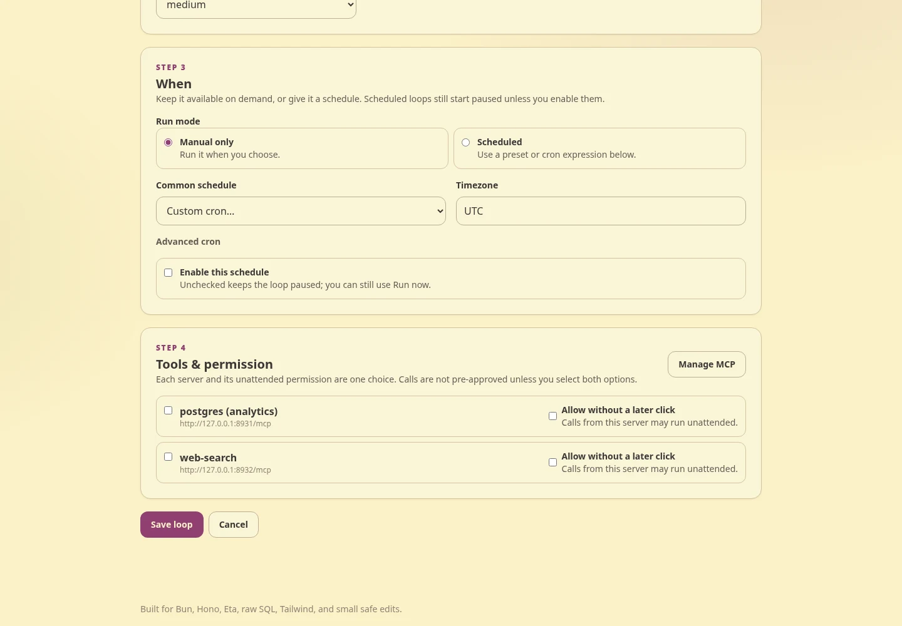
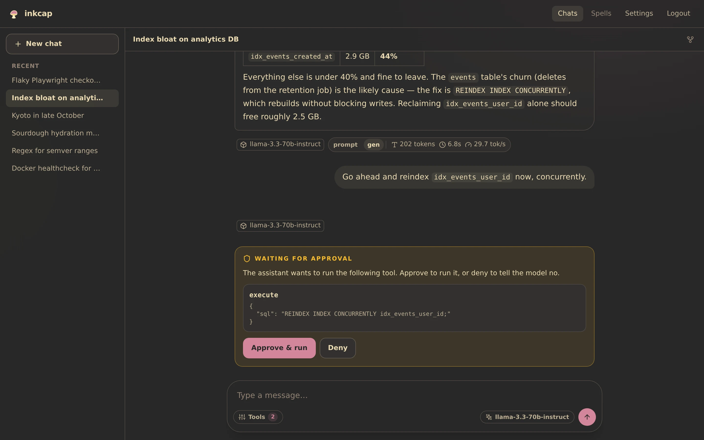
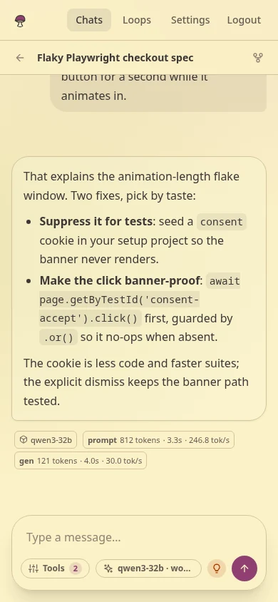

Connect your models
Keep a local llama-server beside hosted OpenAI-compatible models and choose per conversation.
 inkcap
inkcapa small, self-hosted LLM chat UI with tools, branches, and runs that outlive the browser

From connection to loop
Keep a local llama-server beside hosted OpenAI-compatible models and choose per conversation.
Branch prompts, inspect outputs, and let MCP calls pause for your approval when needed.
Save the prompt, model, schedule, and exact tool permissions. Every run becomes a chat you can inspect.
The workbench



Close the laptop
Tokens keep flowing with zero browsers connected. Tool calls can park for approval, and a reload always returns to database truth—not a half-remembered client state.


Quiet technical proof
Quick start
Run the published Docker image, register, then connect a local or hosted provider. The detailed guide includes a copyable Docker command, Bun setup, networking, and environment options.
Open the setup guide